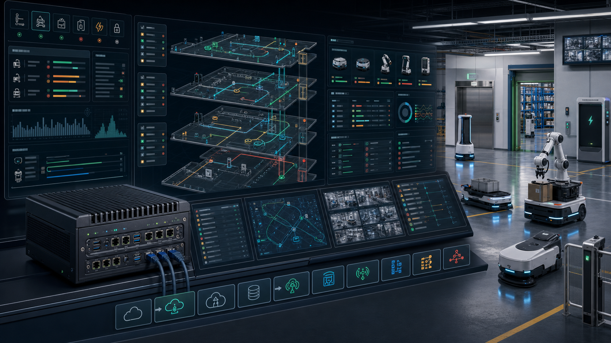

痛点从第二个机器人品牌开始
Vendor A 和 Vendor B 都能跑，但它们不共享交通假设、地图版本、charger queue、门梯预约和事故语义。
01 · Problem
仓库、工厂、医院和园区开始同时部署 AMR、AGV、清洁、配送、巡检和机械臂。每个厂商都有自己的地图、调度器、充电逻辑、dashboard 和异常流程，客户最后用群聊、电话和临时脚本协调共享空间。
Vendor A 和 Vendor B 都能跑，但它们不共享交通假设、地图版本、charger queue、门梯预约和事故语义。
单机 demo 绕不开真实设施资源：门禁、电梯、装卸位、充电桩、禁区、慢行区和人机混行区。
WMS/WES、RCS、BMS、PLC、厂商 API 和运营流程反复定制，扩站速度被工程集成拖慢。
OT 场景需要本地连续运行、低延迟、审计、断网可用和明确安全边界。
堵塞、抢梯、低电、人工接管和绕行轨迹常常只留在日志里，没有变成下一版策略的数据。
02 · Current Alternatives Fail
FleetConductor 不把 VDA 5050、MassRobotics 或 Open-RMF 讲成魔法。它把这些必要组件产品化，并补上地图对齐、现场 commissioning、RBAC、审计、事件复盘、设施适配和边缘部署。
MiR、OTTO、Locus、Geek+、Hikrobot、HAI 等系统管自家队列很强，但跨品牌和共享设施通常不是第一责任。
提供 central control 与 AGV/AMR 的 MQTT/JSON 通信语言，但不定义安全、交通算法、外设接口或网络安全。
适合共享位置、状态、速度、健康和可用性，不是 fleet management、导航或安全控制系统。
证明多车队和门梯等共享资源调度可行，但企业客户仍需要硬化产品、支持、权限和商业 adapter。
Manhattan、Blue Yonder、GreyOrange、SVT 等管业务流程和集成，但不天然负责低延迟机器人交通和楼宇资源。
03 · Solution
它不替代机器人厂商 autonomy stack，也不替代安全控制器。它把不同机器人 API、VDA 5050 / Open-RMF-compatible 工作流和设施接口，翻译成现场级任务、交通、门梯、充电和事件 orchestration。
从 WMS、MES、CMMS、LIMS、HIS、BMS 或人工调度台接收任务和设施事件。
把楼层、车道、门、电梯、充电桩、队列点、禁区和地图版本变成 SiteGraph。
通过 VDA 5050 v3、Open-RMF、MassRobotics、ROS 2、REST/MQTT/OPC UA/BACnet 接入。
按时间窗预约走廊、电梯、门、充电桩和装卸位，避免共享资源冲突。
把低电、堵塞、门梯失败、人工接管和断网事件变成可审计复盘包。

04 · Why Now
IFR 显示 2024 年工业机器人新增安装约 542,000 台，专业服务机器人销量接近 20 万台。与此同时，VDA 5050 v3.0.0、MassRobotics、Open-RMF、ROS 2 LTS 和 Dragonwing edge AI 让本地塔台从系统集成项目变成可产品化平台。
05 · Product
第一阶段不抢 OEM fleet manager 的控制权：连接 WMS/WES + Vendor A + Vendor B + 一个共享设施资源，证明更快上线、更少人工协调、更好可追溯。然后再进入主动交通、充电、门梯和多站点优化。
06 · Product API
所有状态都进入 append-only event log；所有指令都有 RBAC、reason code、ack、replay pointer 和 audit record。安全关键功能仍由机器人 OEM 与合规设施系统负责。
nodes、lanes、zones、doors、lifts、chargers、queue points、speed overlays、temporary closures。
canonical site frame、floor frame、RMF frame、vendor fleet maps 和 robot-native maps。
vda5050、rmf_ros2、vendor_rest_grpc、traffic_light、observe_only 五种接入模式。
走廊、电梯、门、充电桩、窄区和装卸位的 time-windowed reservation lease。
deadlock、blocked path、elevator timeout、charger fault、manual intervention、emergency stop。
camera frames、state/action、map context、operator intervention、outcome label、reward tags。
07 · Market & Business Model
第一笔预算来自避免重复集成和加速 site launch；扩展预算来自 uptime、利用率、交通控制、多站点标准化和 RaaS 计费。不要用巨大 TAM 开头，先讲已有机器人、第二厂商和共享设施资源的痛点。
Pilot / site setup：$25k-$150k。Platform fee：$3k-$15k / site / month。Observe：$75-$200 / robot / month。Active dispatch / traffic：$250-$700 / robot / month。RaaS attach：5%-12% of robot RaaS MRR。
中国版更适合本地部署、私有化、项目制和 SI-led delivery：人民币 10k-40k / site / month，人民币 100-500 / robot / month，或人民币 100k-500k 项目 license + 15%-20% 年维护。
08 · Competition & Moat
InOrbit、Formant、Meili、KINEXON、SYNAOS、Open-RMF、NVIDIA Isaac、MiR、OTTO、Geek+、Hikrobot、SVT、Blue Yonder 都各自解决一层。FleetConductor 的防线是本地边缘、设施资源、混合厂商、事件记忆和 Qualcomm profile。
每个商业站点的楼层、门梯、走廊、充电、禁区、WMS/WES 和运营规则会形成黏性资产。
机器人、门梯、充电、WMS/MES/CMMS/BMS 的 adapter 越多，交付速度越快。
堵塞、抢梯、低电、人工接管和绕行会变成下一站点配置、仿真场景和训练数据。
不同 Dragonwing / RB / QCS / IQ target 的相机、NPU、网络、热、电源和离线行为形成 profile library。
09 · Why Qualcomm
FleetConductor 把 Dragonwing 从开发板叙事升级成现场 edge tower appliance：本地任务、交通、地图、事件、视频、AI profile 和日志都在现场运行，云端负责远程支持、训练和策略更新。
多摄像头检测 blocked aisle、forklift、人流、电梯队列、dock congestion 和安全事件。
Wi-Fi、private 5G、VLAN、mTLS、DDS Security 和 OT 分段支撑现场通信。
QNN compile/profile/run 结果进入上线门禁、事件证据和 LeRobot 数据飞轮。
云端断开时，本地塔台继续调度、记录、审计和保守执行。
OEM、SI、WMS/WES、RaaS 和门梯系统围绕 Dragonwing edge workflow 协作。
10 · Demo & Ask
演示不需要接入真实电梯。用浏览器 + 本地 edge runtime 模拟 Acme Medical Tower：3 个楼层、3 个机器人厂商、6 扇门、2 部服务电梯、4 个充电桩和一组 WMS/HIS mock tasks。
接入 delivery_vda5050、cleaning_ros2、security_vendor_rest 三个 fleet adapter 和同一张 SiteGraph。
同时出现药房配送、清洁任务和巡检任务，三台机器人争抢电梯、窄走廊和充电桩。
FleetConductor 本地预约电梯、门、走廊和充电窗口；断开云端后继续运行并记录事件。
导出 incident capsule、audit trail、CloudEvents log 和 LeRobot-compatible recovery episode。
我们的申请：用 Qualcomm Dragonwing / IQ edge hardware 打造一套 mixed robot edge tower reference workflow，让比赛 demo 能直接连接真实商业部署问题。
FleetConductor 不承诺开箱兼容所有机器人，也不替代机器人本体安全控制器。它卖的是一座本地塔台：连接现有机器人、设施系统和企业流程，让多品牌车队少堵车、少停机、更可追溯。